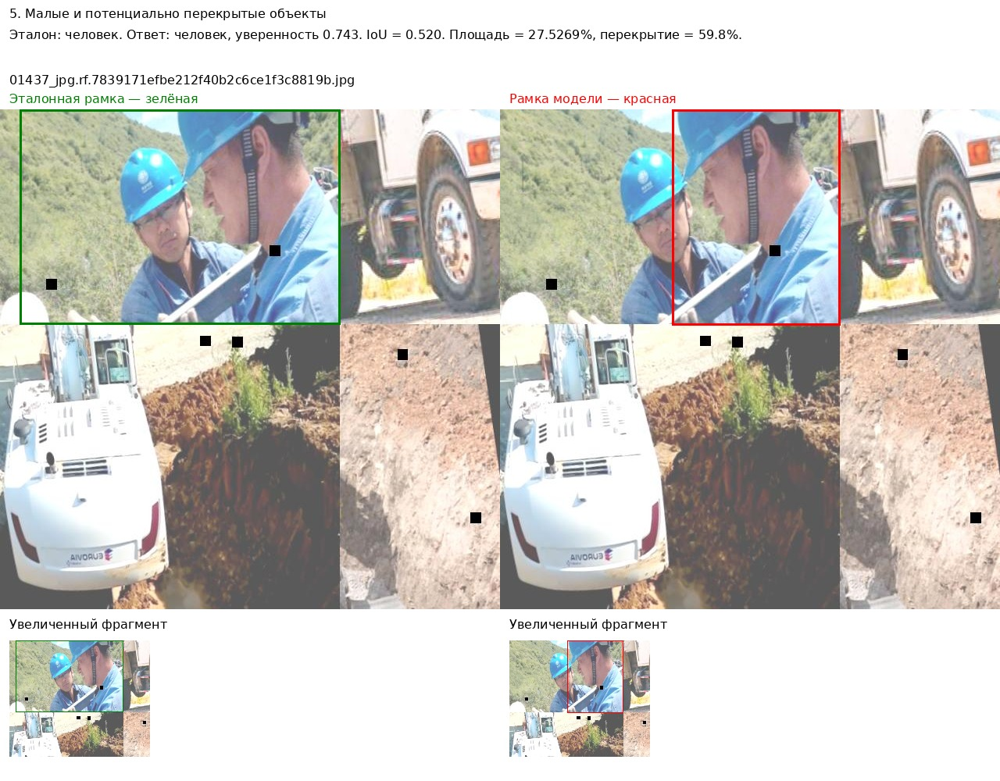
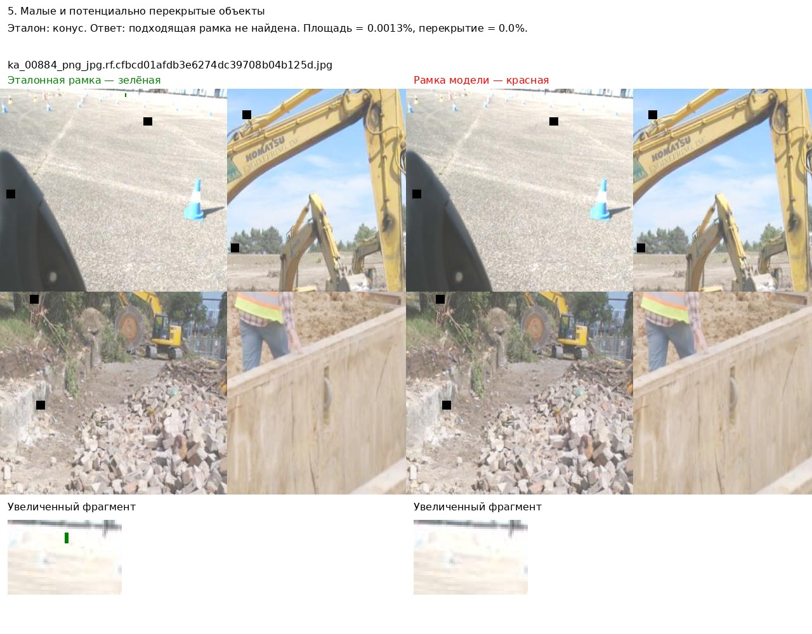
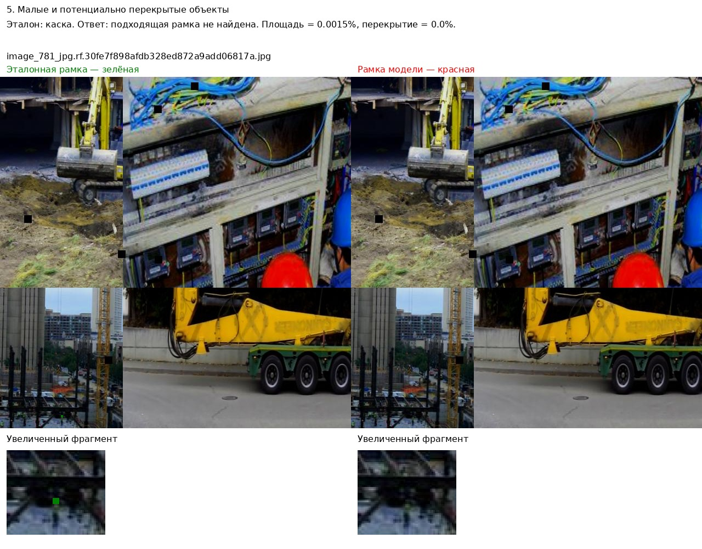
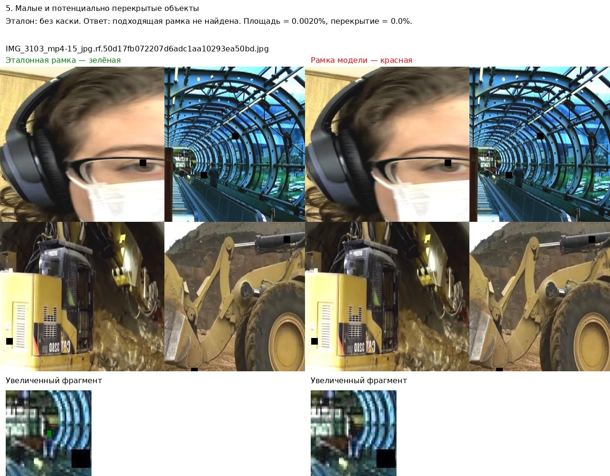

Площадь < 0.25% кадра или перекрытие рамкой того же класса ≥ 50%; есть пропуск или низкий IoU. Перекрытие требует ручной проверки.
Слева эталон, справа ответ модели. Показаны только рассматриваемые рамки.
Кандидатов: 1561; показано кадров: 4.

01437_jpg.rf.7839171efbe212f40b2c6ce1f3c8819b.jpg Эталон: человек. Ответ: человек, уверенность 0.743. IoU = 0.520. Площадь = 27.5269%, перекрытие = 59.8%.

ka_00884_png_jpg.rf.cfbcd01afdb3e6274dc39708b04b125d.jpg Эталон: конус. Ответ: подходящая рамка не найдена. Площадь = 0.0013%, перекрытие = 0.0%.

image_781_jpg.rf.30fe7f898afdb328ed872a9add06817a.jpg Эталон: каска. Ответ: подходящая рамка не найдена. Площадь = 0.0015%, перекрытие = 0.0%.

IMG_3103_mp4-15_jpg.rf.50d17fb072207d6adc1aa10293ea50bd.jpg Эталон: без каски. Ответ: подходящая рамка не найдена. Площадь = 0.0020%, перекрытие = 0.0%.